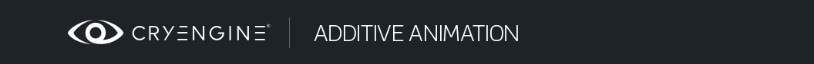

Обзор
Разделы
В этом уроке показано, как создавать аддитивную анимацию в 3ds Max с помощью Biped и как можно максимально эффективно использовать аддитивную анимацию.
Прежде чем продолжить, пожалуйста, ознакомьтесь с документацией по Аддитивные анимации.
Примеры ресурсов
Загрузите образцы ресурсов 3ds Max 2010, необходимые для этого руководства:
Создание ресурсов в 3ds Max
Это промежуточное руководство, в котором предполагается, что пользователи понимают основы 3ds Max, такие как пользовательский интерфейс и создание персонажей с помощью двуногих, и знакомы с .
В этом руководстве основное внимание уделяется только аспекту создания и предварительного просмотра аддитивной анимации.
В этом уроке мы собираемся создать аддитивную анимацию, в которой персонаж наклоняется, чтобы укрыться от выстрелов во время бега.
Раньше вам приходилось создавать настоящую анимацию бега, в которой персонаж укрывается. Однако с помощью аддитивной анимации вы можете использовать уже существующую анимацию бега и добавить к ней анимацию укрытия.
Откройте SDK_character_male.max и загрузите файл bip relaxed_run_nw_forward_fast_01 в Миксер.
Пожалуйста, сделайте 4-х временной цикл анимации запуска, вычислите микширование и загрузите его в сцену.
Мы собираемся использовать эту цикличную анимацию в качестве основы для создания аддитивной анимации.
Теперь добавьте слой для двуногого человека и начните размещать ключи для создания аддитивной анимации.
Взгляните на образец файла additive_layer_animation.max чтобы получить представление.
Позы руки, когда персонаж укрывается, чтобы остановить анимацию, показаны ниже:
После этого убедитесь, что к концу анимации персонаж возвращается к своей исходной анимации.
Одним из методов в Max является отключение уровня 1:
Копировать позу:
и включите слой 1 обратно и вставьте позу так, чтобы она соответствовала анимации на слое 0. В этом уроке поза была вставлена в ключевой кадр 68.
Дайте достаточное количество кадров, чтобы персонаж вернулся к исходной анимации. В противном случае вы увидите, как он отскочит назад. К счастью, с помощью этого метода вы можете просмотреть свою аддитивную анимацию в Max перед ее экспортом.
Если вы довольны своей анимацией, вы готовы ее экспортировать.
Теперь мы собираемся экспортировать две анимации:
- Добавка, заставляющая персонажа сгибаться во время бега.
- Анимация руки имеет анимацию верхней части тела, которая заменяет существующую анимацию левой руки. Поскольку он является аддитивным, он не может завершить существующую анимацию, и вам нужно только, чтобы левая рука оставалась на месте. Таким образом, в этом уроке вы также увидите, как можно загружать несколько анимаций на разные слои в CRYENGINE 3 и более поздних версиях.
Сначала выберите только Bip01 L Ключица в Экспорт костей и экспортируем всю анимацию руки (имя arms_coverFire_01.caf здесь используется).
Теперь вы готовы экспортировать аддитивную анимацию.
Выделите всю установку Biped, перейдите на слой 0 и удалите все ключи, кроме одного в кадре 0.
Раньше вам нужна была только анимация бега в качестве основы для создания аддитивной анимации. Теперь, когда вы закончили, он вам не нужен и вы можете удалить его ниже.
Вернитесь к слою 1 и сверните слой.
Конечный результат, который вы получите, — это аддитивная анимация. Также обязательно удалите ключи на локаторе.
Выбрать Бип01 в Экспорт костей панель и экспортируйте анимацию в аддитивную папку (имя additive_walk_forward_fast_CF_01.caf здесь используется).
Убедитесь, что в файле Animations.cba заданы правильные настройки.
<!-- This tells the RC to flag Assets exported to this folder as additive assets and process them differently -->
<Animation APath="additive" Additive_Animation="1" SkipSaveToDatabase="0" RotEpsilon="0.0000001" PosEpsilon="0.01" compression="2" />Убедитесь, что в файле .animsettings вашей анимации указаны правильные настройки.
<AnimationSettings>
<AdditiveAnimation value="1"/>
</AnimationSettings>Тестирование добавок в редакторе символов
Открыть тот Редактор персонажей и загрузите sdk_character_male.cdf (если он не загружается по умолчанию).
Убедитесь, что ваши новые анимации отображаются в левой части редактора персонажей. Если вы тестируете аддитивную анимацию, не бойтесь каких-либо деформаций, которые вы увидите. Поскольку это аддитивная анимация, ее нельзя воспроизводить на основном слое.
Убедитесь, что для слоя установлено значение Первичный, Анимация включен, и все ИК выключены.
Нажмите на relaxed_run_forward_fast анимацию на панели «Анимация» слева.
Теперь измените слой на Среднее .1:
Нажмите на аддитивную анимацию additive_walk_forward_fast_CF_01 на панели «Анимация» слева.
Обратите внимание, что аддитивная анимация фактически добавляется к существующей анимации бега. Персонаж съеживается во время бега.
Измените слой сейчас на Среднее .2 и нажмите на arms_coverFire_01 на панели «Анимация» слева.
Теперь вы можете увидеть, как получить новую анимацию приседания, используя добавки и анимацию верхней части тела. Конечный результат — это то, что вы уже просматривали в Max.
Следите за деформацией сетки при создании аддитивной анимации.
На самом деле вы можете настроить вес аддитивной анимации. Если вы вернетесь к Layer Secondary .1, вы сможете установить Аддитивные веса анимации. 1 — значение по умолчанию.